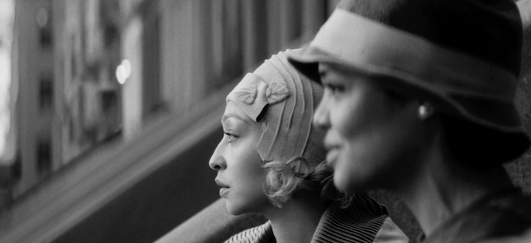

The Fearlessness of Passing
Rebecca Hall’s adaptation of Nella Larsen’s 1929 novel continues the author’s exploration of the suffocating strictures of the color line.

Making a movie of Nella Larsen’s 1929 novel Passing, one of the great works of the Harlem
Renaissance—and, I’d argue, a great American novel—would be tricky in any era. That the actress
Rebecca Hall, making her directing debut, has done a close-to-devastating job of it in this era is a
remarkable achievement.
The novel is the story of two girlhood friends who reencounter each other as young, married women,
one passing for white and the other firmly settled into the life of Harlem’s black bourgeoisie.
Larsen practically invites the careless reader to fall into well-intentioned sociological clichés—in
other words, to believe that this is a novel about the tragedy that befalls those who, driven by
racist persecution, cross the color line and betray their own.
Actually, the novel is about the absurdity of the color line as a concept, about race as “the thing
that bound and suffocated.” For Larsen, the idea that you could betray your race was another way of
saying that people should stick to their own kind. It’s the passing Clare, a slim, pale-skinned,
heedless beauty, who is Larsen’s heroine. Clare, taken in as a maid by her poor white aunts when her
alcoholic father dies, doesn’t decide to pass because she’s oppressed but because she’s shunned by
the well-heeled black people among whom she grew up. (In one stinging scene, Clare, already passing,
approaches an old school friend whom she recognizes while shopping in Marshall Field’s, only to have
the woman cut her dead.) Clare is hungry for life and for pleasure, which she takes as it comes to
her. The way in which she crosses back and forth between black and white, between the thrill of a
Negro Welfare League dance and white upper-middle-class society, makes a hash of the polite
segregation—of both race and class—to which the novel’s other protagonist, Irene, pays obeisance.
It’s Irene—whose sensibility animates the story through limited-view third person narration—whom
Larsen views as passing on a more profound level. She is ensconced in an unhappy marriage of
stifling convention to Brian, a successful black doctor who dreams of leaving America for Brazil.
From the moment Clare reenters her life, ’Rene, as Clare affectionately calls her, tells herself
that what’s bothering her is the risk that Clare is taking by associating with black people, which
could reveal Clare’s race to her racist husband. (His nickname for Clare is “Nig,” the original
title of Larsen’s novel, scotched by Knopf.) That’s a ruse. What appears to really bother Irene is
how much Clare, a vital force who regards conventions and proscriptions as silly things, brings her
face to face with her own unhappiness, and how Clare demonstrates the irrelevance of the rules that
Irene has spent her life observing.
The challenge that a contemporary film version of Passing faces is another kind of obedience: to a
belief that art must follow the tenets of progressive sentiment, which tells us that race is a
construct but too often views people who venture outside their race—or gender or class—as engaging
in appropriation or betrayal. A movie adaptation of Passing that expressed this view would champion
the suffocating social strictures that keep Irene coiled so tight. Hall and her two leads and
co-collaborators—Tessa Thompson as Irene, and Ruth Negga as Clare—steer the film away from those
strictures, and from the socially conscious expressions of tepid pity that passing narratives
usually invite. The three of them head right into the thorniness of the material, and none is
interested in prettying up the characters to make them easier to like.
If you’re used to the openness of Tessa Thompson’s face as it has appeared on screen—the easy access
to emotion, the sometimes wry smile—it’s startling to see the tight, nearly prim countenance she
wears as Irene. This is a woman who always seems to be on the verge of making a judgment. Yet we
don’t feel cut off from her. Thompson draws us into the slowly spiraling panic beneath Irene’s
controlled veneer. She is certain that Clare will eventually cause things to go wrong, and—on a
deeper, more insidious level—she wishes for that to happen, the sooner for everything to return to
its proper place. You can feel these buried desires in small moments, such as when Irene comes home
to find Clare sitting in her backyard with the maid taking in the sun, and in bigger ones, like when
she sees the ease and pleasure that Clare’s presence releases in Brian and their two boys.
In other moments, Hall shows us nothing more than Thompson brooding by herself in her bedroom or
parlor, evoking something close to Hitchcockian anxiety. The production design (by Nora Mendis), art
direction (by Kristina Porter), and set decoration (by Paige Mitchell) for Irene and Brian’s Harlem
brownstone put me in mind at times of the Bates homestead in Psycho. The decor is suffocating
Victoriana. There’s nothing inappropriately expressionist about it. We often think of anything
having to do with Harlem during the 1920s as steeped in the glamour of the Jazz Age. But you can see
the same heavy-spirited furnishings from Passing in the work of the renowned Harlem portrait
photographer James Van Der Zee. The look works as a physical manifestation of Irene’s coiled psyche.
When you see her out with Brian for a night of jazz at a Harlem club, a place that encourages
letting go, you get a sense of how Irene is passing—not racially, but as a paragon of middle-class
rectitude.
By contrast, Clare is just finding avenues that allow her to be herself. Negga has been given the
right look for someone who, as many black people didn’t, had the ability to pass. Slim, sleek, and
silvery, from her platinum hair to her white frocks and powdery pale skin, Clare looks like a hood
ornament on a 1930s Pontiac come to life. She glides through the story, and Negga glides through the
performance, slicing the air around her and standing cool and unruffled. Seen in her blindingly
white hotel suite, she seems right at home, a modernist pearl in a modernist setting. When she
visits Irene’s staid brownstone, you get the sense that the air in the rooms is finally circulating.
Clare is at home everywhere, effortlessly. The way Negga plays her, cool and fun-loving but not
taken in by peoples’ pretensions or blind to their motives, she might be a grown-up Daisy Buchanan,
but with the cruelty and pretension and coquetry drained out. If Irene’s gaze judges, Clare’s
appraises, which is much more threatening, because appraisal suspends judgment until there’s been a
long, hard look. Clare gets under Irene’s skin in the way that those who regard rules as
trivialities always unnerve the rigid. In Negga’s compact performance, style and substance is
inseparable. It’s what Jean Harlow or Carole Lombard might have done had they been given the chance
to be tragic heroines.
Larsen’s novel is slim (109 pages in my Penguin edition), and Hall similarly has no wasted space in
the film’s ninety-eight minutes. As an actress, Hall has for some time now been one of the best
reasons to keep going to the movies, and one of the least heralded. Her trademark is her
fearlessness. You can see it in her remarkable performance as part of a suburban ménage in the
touching and awkward and gutsy Professor Marston and the Wonder Women (2017), and you could see it
earlier this year in the middling Gothic thriller The Night House, in which she’s so determined not
to be ingratiating that her performance becomes a symphony of the anger and desire for isolation
that mourning stokes in us.
In the first few scenes of Passing, everything seems too pointed, the shots too deliberate. But Hall
soon settles right in. It’s no surprise, given her background as an actress, that she knows how to
find ways to express interior states. What’s more impressive is how she thinks of the material in
visual terms. It might seem an obvious symbolic choice to shoot the movie in black and white. But,
as Hall said at this year’s New York Film Festival, black and white isn’t black and white—it’s gray.
Eduard Grau’s cinematography has a billowing quality, as if the world and people we are seeing are
being enclosed in clouds of anxiety. In the end, the look of the movie evokes a refusal to make easy
judgments. (The final shot is stunning, a perfect translation of the climax of Larsen’s novel into
visual lyricism.) And although her decision to shoot the movie in a squarish 4:3 aspect ratio,
instead of the traditional rectangular shape of contemporary movies, might also seem easily symbolic
(“I literally put the characters in a box,” she told the festival audience), she also leaves space
around Clare and Irene. Close-ups end with the tops of their heads in the middle of the screen; a
shot of the two of them talking places them off to one side. At first I wasn’t sure what Hall was up
to with this, but it seems that the use of visual space in Passing is a way to honor Larsen’s belief
that, even within the circumscriptions of race and class, these women have room to choose.
Larsen, particularly in light of her posthumous literary reputation, has often been boxed in.
Passing was the second of her two novels; shortly after it was published, accusations of plagiarism
directed at a short story she wrote, and the fallout of a messy public divorce, drove her to leave
the literary world and cut herself off from past friends. From 1939 until her death in 1964, she
worked as a hospital administrator in New York and lived in a small apartment on Second Avenue. Her
rediscovery started with a 1980 article in Ms. by Mary Helen Washington. But it wasn’t until 2006,
with Cornell professor George Hutchinson’s biography In Search of Nella Larsen, that a scholar
confirmed facts of Larsen’s life that two previous scholarly biographies had claimed were lies
brought on by racial self-loathing. It’s galling that someone who wrote about the trap of racial
identity, and whose portraits of the black bourgeoisie both criticized that society and refuted the
stereotype—held by the bigoted and often the sympathetic—that black people are poor and ignorant and
helpless, would have her life changed to suit the ideological ends that her fiction escaped.
Given the current cultural climate, Hall’s work could be used for ideological ends as well. At the
New York Film Festival, she spoke honestly and movingly about her mother, the American soprano Maria
Ewing, whose own Dutch father had passed for white. A friend who knew Larsen’s novel, Hall said,
gave it to her so that she might understand something of the psychology of passing.
This background is fascinating as an answer to the question, “How did you come to this material?”
What it is not, and what it should never be, is an answer to a question that no one has any
authority to ask, yet is increasingly demanded of artists: what gives you the right to tell this
story? For all the arrogance behind that question, there is an answer, the same for Hall as it was
for Larsen: talent.